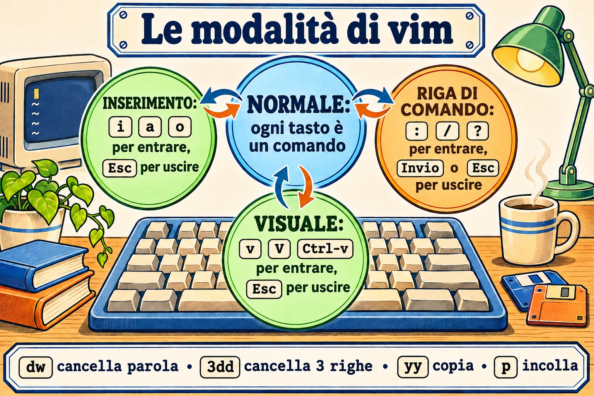
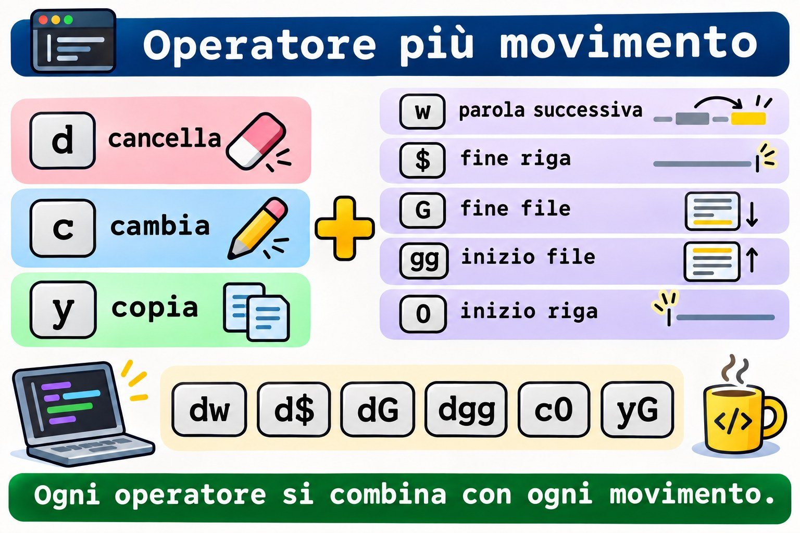
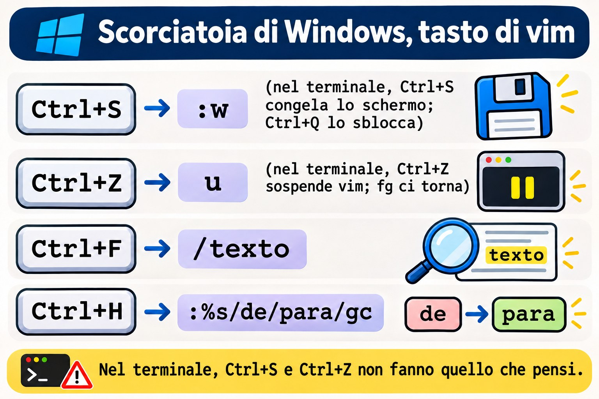
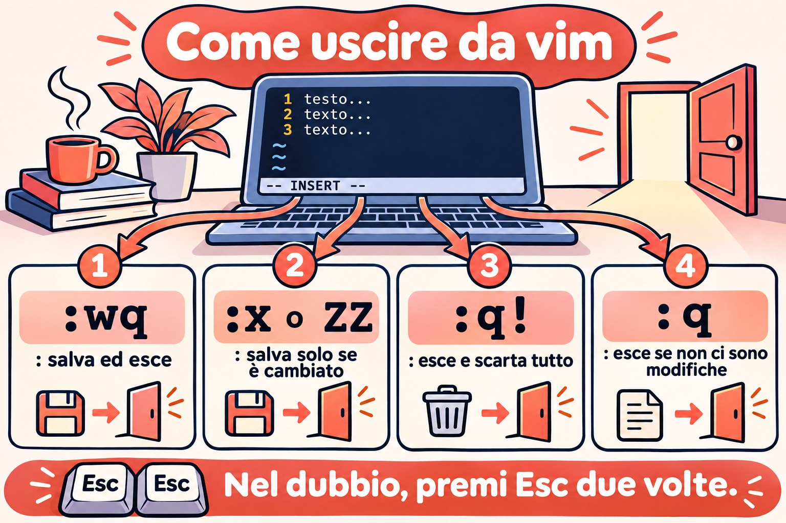
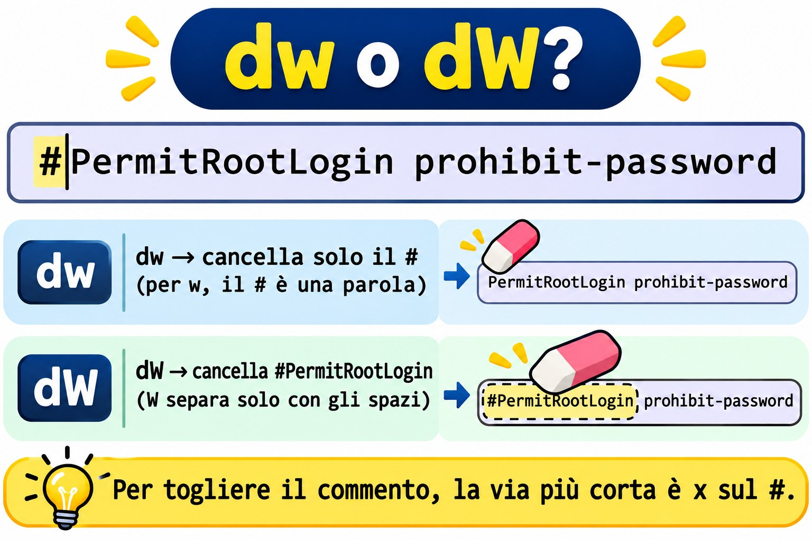
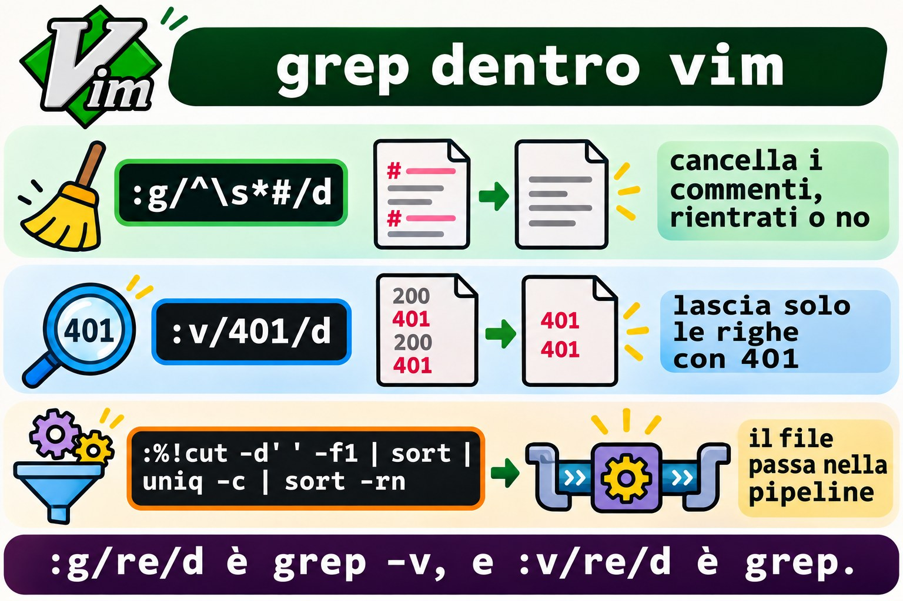
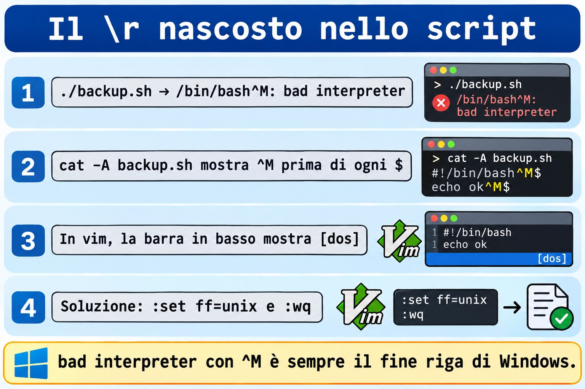

Lezione 3.5 · vi e vim sul serio
Nelle Lezioni 3.3 e 3.4 hai modificato i file con i comandi: grep sceglieva le righe, sed sostituiva, awk calcolava. Oggi modifichi i file con le mani, nell'editor che esiste su ogni Linux, anche sul server appena installato, nel container senza pacchetti e in modalità di emergenza, quando il disco non si è montato e non c'è rete. Quell'editor è vi, e quasi sempre è vim, in una versione o nell'altra. Non devi per forza amarlo. Devi saper entrare, cambiare quello che c'è da cambiare, uscire senza fare danni e sapere cosa fare quando la sessione cade a metà. Il resto è velocità, e la velocità viene dalla stessa regex delle ultime due lezioni.
| Scheda | Lezione 3.5 |
|---|---|
| Modulo | M3 · Testo ed editor, lezione 5 di 5 |
| Quando | Settimana 8 |
| Alla fine sei in grado di | Aprire, salvare e uscire da vi senza perdere nulla, con :w, :q!, :wq, :x e ZZ; passare tra modalità normale, inserimento, riga di comando e visuale senza perderti; muoverti per parola, riga e numero di riga senza frecce; cancellare, copiare, incollare, annullare e ripetere con operatore, movimento, conteggio e il .; cercare con / e ? e sostituire con :s e :%s, con gruppi, & e un altro delimitatore; cancellare e filtrare righe con :g, :v e :%!; vedere tabulazioni, spazi e il ^M di Windows con :set list e :set ff; recuperare una modifica persa dal file .swp; modificare i file di sistema con sudoedit e visudo, senza sudo vim; sapere quale vi installa ogni distribuzione e perché quello di Debian a volte "non annulla" |
| Prerequisiti | Lezione 2.3 (journal e log); Lezione 3.3 (BRE ed ERE, classi come [[:space:]]); Lezione 3.4 (s///, gruppi, &, ~/lab34 con conf.amostra e acesso.log) |
| Durata | Circa 2h30 |
| Snapshot | m3a5-inicio e m3a5-fim su entrambe le VM |
1 · Riscaldamento
Tre domande, a mente. Scrivi le risposte; le soluzioni le controllano alla fine.
- Apri un file con
vie digiti subitoPort 2222. Sullo schermo compaiono cose che non hai scritto e il cursore è saltato da un'altra parte. Indovina: cos'è successo? - Apri un file e
vimmostraE325: ATTENTIONe parla di un file.swp. Indovina: cosa significa, ed è pericoloso premere semplicemente Invio? - Il cursore è sulla riga 1 di
conf.amostrae digiti:s/yes/no/. Indovina: la riga 7,PasswordAuthentication yes, cambia?
2 · Perché conta
vi raramente rovina un file da solo. A rovinarlo è la fretta di uscirne:
| La richiesta | La risposta sbagliata | Cosa provoca |
|---|---|---|
"Il server è finito in modalità di emergenza per colpa di /etc/fstab" | Cercare nano | In modalità di emergenza su Rocky, e in molte immagini minimali, esiste solo vi. Chi non lo sa usare reinstalla il server, o aspetta qualcuno che lo sappia |
"Metti l'utente operador in sudoers" | sudo vi /etc/sudoers e salvare | Un errore di battitura passa liscio, perché vi non controlla niente. sudo si lamenta la volta dopo, e a volte smette di funzionare per tutti. visudo controlla prima di scrivere |
"Non riesco a uscire da vi, chiudo il terminale" | Chiudere la finestra o uccidere il processo | La modifica si perde e resta un .arquivo.swp. Il prossimo che apre il file, magari tu domani, riceve un E325 e non sa cosa rispondere |
"Sostituisci tutti gli yes con no nel file" | :s/yes/no/ | Sostituisce solo nella riga del cursore, e solo la prima occorrenza. % e g fanno la differenza, come in sed |
| "Modifica il file di root, senza togliergli i permessi" | sudo vim /etc/algo.conf, oppure chmod 666 per riuscire a salvare | sudo vim esegue l'intero editor come root, con i tuoi plugin e il :! che apre una shell di root. chmod lascia il file aperto a qualsiasi utente. sudoedit modifica una copia con il tuo utente e riscrive come root |
| "Lo script viene dal collega che usa Windows e non parte" | Riscrivere lo script | Il file ha \r\n alla fine di ogni riga. vim mostra [dos] all'apertura, e un :set ff=unix risolve in due secondi |
vi è strano per un solo motivo: le lettere sono comandi, a meno che tu non dica che stai per scrivere testo. Capito questo, il resto è vocabolario.
3 · Modello mentale
viha delle modalità. In modalità normale, dove entri, ogni tasto è un comando:xcancella,dinizia un "cancella",wavanza di una parola. Per scrivere testo entri in modalità inserimento (coni,aoo) e ne esci conEsc. I comandi con:,/e?aprono una riga di comando in fondo allo schermo, che viene eseguita quando premi Invio. Nel dubbio, premiEscdue volte: torni in modalità normale, da cui parte tutto.
i a o I A O
┌──────────────────────►┌───────────────┐
│ │ INSERÇÃO │ as teclas viram texto
vim arquivo ─►┌───┴─────────┐◄────────────┤ -- INSERT -- │
│ NORMAL │ Esc └───────────────┘
│ teclas são │
│ comandos │ : / ? ┌───────────────┐
│ ├────────────►│ LINHA DE │ :wq :%s/a/b/g /regex
│ │◄────────────┤ COMANDO │ roda com Enter
└───┬─────────┘ Enter ou Esc└───────────────┘
│ ▲
v V ^v │ │ Esc, ou um operador (d y c > <)
▼ │
┌──────┴────────┐
│ VISUAL │ seleciona caracteres (v), linhas (V) ou um bloco (Ctrl-v)
└───────────────┘
A gramática do modo normal: [contagem] operador [contagem] movimento
d w apaga até a próxima palavra
c $ troca até o fim da linha
3 d d apaga 3 linhas (operador repetido = a linha inteira)
y G copia daqui até a última linha
. repete a última mudança, onde o cursor estiverDue conseguenze pratiche. Prima: un comando in modalità normale è una frase, verbo e oggetto. Non impari a memoria dw, dd, d$, cw, c$, yy, y$ come quattordici scorciatoie; impari tre verbi (d, c, y) e qualche movimento, e li combini. Seconda: il . ripete la frase intera. Una sostituzione riuscita una volta diventa n e ., n e ., quante volte vuoi, controllando ogni passaggio.


4 · Concetto a livelli
Essenziale
Aprire e uscire. Tutto comincia e finisce in modalità normale. Se non sai dove sei, Esc.
| Digiti | Fa |
|---|---|
vim arq | Apre il file. Se non esiste, si apre vuoto e viene creato al salvataggio |
vim +7 arq | Apre alla riga 7 |
vim +/Password arq | Apre alla prima riga che corrisponde alla regex |
view arq o vim -R arq | Apre in sola lettura. È il modo di guardare un file di produzione senza paura |
:w | Scrive e resta nel file |
:q | Esce, se non ci sono modifiche da scrivere. Se ci sono, rifiuta con E37 |
:q! | Esce e scarta le modifiche |
:wq | Scrive ed esce. Scrive anche senza modifiche, e la data del file cambia |
:x o ZZ | Scrive solo se ci sono modifiche, ed esce |
ZQ | Come :q! |
:w novo.conf | Scrive una copia con un altro nome; il buffer resta legato all'originale |
:e! | Torna al file com'è sul disco, buttando via quello che hai cambiato dall'ultimo :w |
Entrare in modalità inserimento. La lettera sceglie dove entra il testo:
| Tasto | Dove |
|---|---|
i | Prima del cursore |
a | Dopo il cursore |
I | All'inizio della riga, dopo gli spazi |
A | Alla fine della riga |
o | In una riga nuova, sotto |
O | In una riga nuova, sopra |
Muoversi. Senza frecce, che su un terminale scadente possono non funzionare, e con il conteggio, che le frecce non hanno:
| Tasto | Va a |
|---|---|
h j k l | Sinistra, giù, su, destra |
w b e | Inizio della parola successiva, inizio di questa o della precedente, fine della parola |
0 ^ $ | Inizio della riga, primo carattere che non è uno spazio, fine della riga |
gg G | Prima riga, ultima riga |
7G o :7 | Riga 7 |
Ctrl-f Ctrl-b | Una schermata avanti, una indietro |
% | La parentesi tonda, quadra o graffa che chiude (o apre) quella sotto il cursore |
Cancellare, copiare, incollare, annullare.
| Tasto | Fa |
|---|---|
x | Cancella il carattere sotto il cursore |
r seguito da un tasto | Sostituisce il carattere sotto il cursore con quel tasto, e resta in modalità normale |
dd | Cancella la riga. 3dd ne cancella tre |
dw, d$ o D | Cancella fino alla parola successiva, fino alla fine della riga |
cw, c$ o C | Cancella ed entra in modalità inserimento: è il "cambia" |
yy | Copia la riga (la y viene da yank). 5yy ne copia cinque |
p P | Incolla dopo, prima. Una riga copiata viene incollata sotto o sopra |
u | Annulla |
Ctrl-r | Ripristina |
. | Ripete l'ultima modifica |
J | Unisce la riga sotto a questa |
dd non si limita a cancellare: conserva la riga. Per questo ddp scambia la riga attuale con quella sotto, e dd, spostarsi, p è il "taglia e incolla" di vi.
Cercare.
| Tasto | Fa |
|---|---|
/regex | Cerca in avanti, a partire dal cursore |
?regex | Cerca all'indietro |
n N | Occorrenza successiva, nella stessa direzione o in quella opposta |
* # | Cerca la parola sotto il cursore, in avanti o all'indietro |
La ricerca usa le regex, le stesse delle lezioni precedenti, nella variante di vim, che vedi nell'Intermedio.
Intermedio
Operatore e movimento. Qualsiasi operatore si combina con qualsiasi movimento:
| Frase | Fa |
|---|---|
dw | Cancella fino all'inizio della parola successiva |
d$ | Cancella fino alla fine della riga |
dG | Cancella da qui fino alla fine del file |
dgg | Cancella da qui fino all'inizio |
d/Port | Cancella da qui fino alla prossima riga con Port, esclusa |
c0 | Cambia dall'inizio della riga fino al cursore |
yG | Copia da qui fino alla fine |
>> e << | Aumenta e diminuisce il rientro della riga; >G fino alla fine |
gUw e guw | Mette la parola in maiuscolo, in minuscolo |
Una "parola" per w è una sequenza di lettere, numeri e _, oppure una sequenza di altri simboli. Per questo dw su #PermitRootLogin cancella solo il #: il # è una parola e PermitRootLogin è un'altra. La W maiuscola usa come separatore solo gli spazi, e dW cancellerebbe #PermitRootLogin per intero.


Sostituire con :s. È lo s/// di sed, dentro l'editor. Senza intervallo, agisce sulla riga del cursore:
| Comando | Agisce su |
|---|---|
:s/yes/no/ | Prima occorrenza nella riga del cursore |
:s/yes/no/g | Tutte nella riga del cursore |
:%s/yes/no/g | Tutte, nell'intero file. Il % è "dalla prima all'ultima riga" |
:5,10s/^/#/ | Dalla riga 5 alla 10: commenta tutte e sei |
:.,$s/a/b/ | Dalla riga del cursore (.) fino alla fine ($) |
:'<,'>s/a/b/ | Sulle righe selezionate in modalità visuale. vim scrive '<,'> da solo quando premi : con una selezione |
:%s/a/b/gc | Tutte, chiedendo una per una: y sostituisce, n salta, a sostituisce tutte quelle rimaste, q si ferma |
:%s/a/b/ge | Tutte, senza errore se non ne trova nessuna. Utile in macro e script |
Gruppi, & e altro delimitatore funzionano come in sed: :%s/^\(PasswordAuthentication\) yes$/\1 no/, :%s/^MaxAuthTries/# &/, :%s#/login#/entrar#g.
La regex di vim. Di default vim lavora come la BRE di sed e di grep senza -E: +, ?, |, graffe e parentesi tonde sono letterali, a meno di usare la barra. E ha scorciatoie sue:
In vim | Significa | Nella ERE di grep -E |
|---|---|---|
\+ \? \= | Uno o più, zero o uno, zero o uno | + ? ? |
\{2,4} | Da due a quattro volte | {2,4} |
\( \) \| | Gruppo e alternativa | ( ) | |
\s \S | Spazio o tabulazione, e il contrario | [[:space:]], [^[:space:]] |
\d \w | Cifra, carattere di parola | [0-9], [[:alnum:]_] |
\< \> | Inizio e fine di parola | \b |
\v all'inizio | Very magic: da lì in poi, + ? | ( ) { } senza barra, come nella ERE | |
\c in qualsiasi punto | Ignora le maiuscole in questa ricerca | grep -i |
Così :%s/[0-9]+/N/g cerca "una cifra seguita da un +", e non trova niente in acesso.log. Quello che volevi è :%s/[0-9]\+/N/g, oppure :%s/\v[0-9]+/N/g.
Cancellare e filtrare righe con :g e :v. :g/regex/comando esegue il comando su ogni riga che corrisponde; :v, su ogni riga che non corrisponde. I due più usati:
:g/^\s*#/d apaga os comentários, com ou sem recuo (o sed '/^[[:space:]]*#/d')
:g/^\s*$/d apaga as linhas vazias ou só com espaços
:v/401/d deixa só as linhas com 401 (o grep 401, dentro do editor)
:g/Failed/p só mostra, sem mudar nada (o p é de print)vim dialoga con la shell.
| Comando | Fa |
|---|---|
:!comando | Esegue un comando e torna. :!ls -l % elenca il file aperto; il % è il suo nome |
:r arquivo | Inserisce il contenuto di un altro file sotto il cursore |
:r !comando | Inserisce l'output di un comando: :r !ip -br a |
:%!comando | Passa l'intero file attraverso il comando e lo sostituisce con il risultato: :%!sort -u |
:5,10!sort | Lo stesso, solo sulle righe da 5 a 10 |
:w !comando | Manda il buffer al comando senza scrivere il file: :w !wc -l |
:%! trasforma l'editor in un banco di filtri: tutto quello che hai imparato nelle Lezioni da 3.2 a 3.4 gira dentro vim, con u per annullare se va male.
Configurare. I :set valgono finché non esci; in ~/.vimrc valgono sempre:
| Opzione | Fa |
|---|---|
:set nu e :set nonu | Mostra e nasconde il numero delle righe |
:set list | Mostra la tabulazione come ^I e la fine della riga come $, come cat -A |
:set hlsearch e :noh | Evidenzia le ricerche; :noh toglie l'evidenziazione fino alla prossima |
:set ignorecase smartcase | Cerca senza distinguere le maiuscole, a meno che tu ne digiti una |
:set ff? | Mostra il formato delle righe: unix (\n) o dos (\r\n) |
:set paste | Incolla il testo senza che vim rientri ogni riga da solo. Poi :set nopaste |
:set opção? | Mostra il valore di qualsiasi opzione |
Ponte Windows
| In Windows | In vim | Attenzione |
|---|---|---|
| Ctrl+S | :w | Nel terminale, Ctrl+S può congelare lo schermo (è il vecchio controllo di flusso). Se si è congelato, Ctrl+Q lo sblocca |
| Ctrl+Z (annulla) | u | Nel terminale, Ctrl+Z sospende vim e ti ridà la shell. Non si è chiuso: fg ci torna. Se te ne dimentichi ed esci da SSH, resta un .swp |
| Ctrl+F (trova) | /texto | La ricerca di vim è una regex: . corrisponde a qualsiasi carattere, come nella Lezione 3.3 |
| Ctrl+H (sostituisci) in Notepad++ | :%s/de/para/gc | In Notepad++, la modalità "Espressione regolare" usa \1 come vim |
| Notepad++ "Modifica > Conversione fine riga > Unix (LF)" | :set ff=unix e :w | Il vecchio Blocco note salvava sempre in \r\n. Quello attuale mantiene il formato del file, ma un file nuovo esce in \r\n |
| Aprire il Blocco note "come amministratore" | sudoedit arq | In Windows l'intero editor diventa amministratore. In Linux, sudoedit lascia l'editor con il tuo utente e solo la scrittura avviene come root |
notepad arq in PowerShell | $EDITOR arq | In Linux, ogni programma che apre un editor (crontab -e, visudo, git commit, systemctl edit) guarda le variabili VISUAL e EDITOR |


Avanzato
Il file di swap (.swp). Mentre modifichi conf.amostra, vim scrive le modifiche, ogni pochi secondi, in un file nascosto accanto, .conf.amostra.swp. Se la sessione cade (SSH che si chiude, kill -9, server che si spegne), le modifiche sono lì. La prossima volta che qualcuno apre il file, vim mostra E325: ATTENTION e offre:
| Opzione | Fa | Quando |
|---|---|---|
(O)pen Read-Only | Apre in sola lettura | Per guardare prima di decidere |
(E)dit anyway | Apre il file dal disco e ignora il .swp | Quasi mai. Se qualcun altro sta modificando, uno sovrascrive l'altro |
(R)ecover | Recupera le modifiche dal .swp | La sessione è caduta e vuoi quello che avevi fatto |
(D)elete it | Cancella il .swp | Hai già recuperato, o sai di non volere quello che contiene. Compare solo se il processo proprietario non è più in esecuzione |
(Q)uit e (A)bort | Rinuncia | Per andare a chiedere chi sta modificando |
Se il messaggio dice process ID: 12345 (STILL RUNNING), un'altra sessione ha il file aperto adesso: è un collega, o sei tu in un altro terminale. Non modificare sopra. Dopo il recupero, il vecchio .swp è ancora lì, e l'E325 ricompare alla prossima apertura finché non lo cancelli. vim -r, senza file, elenca i .swp che trova.
Modificare un file di sistema: sudoedit, visudo e compagnia.
| File | Usa | Perché |
|---|---|---|
| Qualsiasi file di configurazione | sudoedit arq (come sudo -e arq) | Copia il file in un temporaneo tuo, apre il tuo editor con il tuo ~/.vimrc, e alla fine riscrive come root. Nessun plugin né :! gira come root |
/etc/sudoers e /etc/sudoers.d/* | sudo visudo e sudo visudo -f /etc/sudoers.d/arq | Blocca il file, modifica una copia e scrive solo se la sintassi è giusta. Se non lo è, chiede What now?: e torna a modificare, x esce senza scrivere, Q scrive con l'errore (mai) |
/etc/passwd e /etc/group | sudo vipw e sudo vigr | Bloccano il file perché un useradd contemporaneo non vada perso. vipw -s e vigr -s modificano shadow e gshadow |
| La tabella di cron | crontab -e | Controlla la sintassi all'uscita e ricarica |
| Un servizio di systemd | sudo systemctl edit nome | Crea il file di override nel posto giusto e ricarica systemd (è la Lezione 4.x) |
| Controllare senza modificare | sudo visudo -c | Legge sudoers e tutti quelli inclusi e dice se sono a posto. Non apre l'editor |
Se sei già dentro vim, hai modificato un file di root e non puoi scrivere, esiste l'uscita di emergenza: :w !sudo tee % > /dev/null. :w ! manda il buffer a sudo tee, che scrive il file come root; il > /dev/null nasconde la copia che tee mostrerebbe. Poi vim avvisa che il file è cambiato fuori da lui: premi L per ricaricare. Funziona, ma è una toppa. L'abitudine giusta è aprire con sudoedit fin dall'inizio.
VISUAL, EDITOR e l'editor predefinito. I programmi cercano in quest'ordine: SUDO_EDITOR (solo sudoedit), VISUAL, EDITOR, e infine un predefinito della distribuzione. Su Rocky il predefinito è vi. Su Debian è /usr/bin/editor, che il sistema delle alternative fa puntare a nano. Per fissare il tuo, in ~/.bashrc: export VISUAL=vim EDITOR=vim.
Modalità visuale e blocco. v seleziona caratteri, V righe, Ctrl-v un rettangolo. Con una selezione, un operatore agisce su di essa: d, y, >, : (per un :s solo lì). Nel vim completo, Ctrl-v, scendere di qualche riga, I# e Esc commenta tutte le righe in un colpo. Nelle versioni minime il blocco può non avere la I; :5,10s/^/#/ funziona in qualsiasi versione.
Registri. Ogni d, c e y va in un registro. Il " è quello predefinito; "0 conserva l'ultima copia (y), che un dd successivo non cancella; da "a a "z sono tuoi. "ayy copia la riga nel registro a, "ap incolla. :reg li mostra tutti. Questo risolve il problema classico: hai copiato una riga, ne hai cancellata un'altra per fare posto, e p ha incollato quella cancellata. Incolla con "0p.
Modeline. Un file può avere, nelle prime o nelle ultime righe, un commento come # vim: set ts=4 sw=4:, e vim applica le opzioni all'apertura. Ci sono state falle di sicurezza su questa strada. Per questo diverse distribuzioni disattivano la funzione per root, e chi modifica file di altre persone può mettere set nomodeline in ~/.vimrc.
5 · Rocky × Debian
| Voce | rocky-lab (Rocky 9) | debian-lab (Debian 13) | Come controllare |
|---|---|---|---|
Cos'è vi | /usr/bin/vi, dal pacchetto vim-minimal | /usr/bin/vi → /etc/alternatives/vi → /usr/bin/vim.tiny, dal pacchetto vim-tiny | readlink -f "$(command -v vi)" |
Il vim completo | Pacchetto vim-enhanced, che non sempre è installato | Pacchetto vim, che non è installato | command -v vim |
| Versione | 8.2 | 9.1 | vi --version | head -2 |
| Dopo aver installato quello completo | vi resta il vim-minimal; il pacchetto di solito porta un /etc/profile.d/vim.sh con alias vi=vim per gli utenti normali, ma non per root | vi passa a puntare a vim.basic, perché ha priorità maggiore nelle alternative | type vi; update-alternatives --display vi |
Modalità compatibile con il vecchio vi | No, nell'uso normale | vim.tiny legge /etc/vim/vimrc.tiny, che attiva compatible, a meno che tu abbia un ~/.vimrc | :set compatible? dentro l'editor |
Editor predefinito (EDITOR vuota) | vi | /usr/bin/editor, che punta a nano | update-alternatives --display editor (Debian) |
visudo e sudoedit senza EDITOR | Aprono vi | Aprono nano | Eseguili e guarda |
crontab -e la prima volta | Apre vi | Chiede quale editor vuoi (select-editor) e salva la scelta in ~/.selected_editor | Eseguilo con un utente nuovo |
vimtutor | Arriva con vim-enhanced | Arriva con il pacchetto vim | command -v vimtutor |
syntax on in ~/.vimrc | Errore in vim-minimal | Errore in vim.tiny | Proteggilo con if has('syntax') |
La riga che frega di più è quella della modalità compatibile. Lo stesso vi, sullo stesso schermo, annulla una volta sola, e le frecce in modalità inserimento scrivono lettere. Non è un difetto: è vim che imita il vi degli anni '80, di proposito. Nel Guasto B lo vedi succedere, e lo ripari con una riga.
L'altra è quella dell'editor predefinito. Su Debian, sudo visudo apre nano, e chi si è allenato solo con vi si perde dall'altra parte. Impara a uscire da entrambi: in nano, Ctrl+O scrive e Ctrl+X esce.
6 · Lab guidato
Sei student, su rocky-lab, e raggiungi debian-lab con ssh deb. Tutto avviene in ~/lab35, su entrambe le VM, su copie. La regola del lab: prima di ogni passo, cp conf.orig treino.conf; dopo, diff conf.orig treino.conf mostra esattamente cosa hanno fatto i tuoi tasti. diff è il tuo giudice, non la tua memoria. L'unico file di root è quello del Passo 8, creato solo per il lab, in /srv/lab35. Nessun file di sistema viene aperto in scrittura.


Nei blocchi qui sotto, i tasti che premi dentro vim compaiono in un commento dopo il comando che apre l'editor. Esc è il tasto Esc, Enter è il tasto Invio, e lo spazio tra i tasti serve solo per leggere: non premere la barra spaziatrice.
Passo 0 · Snapshot, cartella e quale vi hai
Su Proxmox, fai lo snapshot m3a5-inicio di entrambe le VM. Su rocky-lab:
eval "$(ssh-agent -s)"; ssh-add
mkdir -p ~/lab35; ssh deb 'mkdir -p ~/lab35'
cd ~/lab35
cp ~/lab34/conf.amostra conf.orig
cp ~/lab34/acesso.log .
wc -l conf.orig acesso.log
scp conf.orig acesso.log deb:lab35/ 11 conf.orig
15 acesso.log
26 totalSe ne manca qualcuno, ricrealo con il Passo 0 della Lezione 3.3. Ora scopri quale vi ha ogni VM. Esegui il blocco su rocky-lab e, sostituendo rpm -qf con dpkg -S, su debian-lab:
type vi vim
readlink -f "$(command -v vi)"
rpm -qf "$(readlink -f "$(command -v vi)")"
vi --version | head -2
echo "VISUAL=$VISUAL EDITOR=$EDITOR"Su Rocky dovresti vedere qualcosa come vi is /usr/bin/vi, il pacchetto vim-minimal, VIM - Vi IMproved 8.2 e, nella seconda riga, una versione Small o Huge, a seconda della build. Forse vim non esiste nemmeno. Su Debian, readlink finisce in /usr/bin/vim.tiny, dpkg -S dice vim-tiny, la versione è 9.1 e la seconda riga parla di Tiny version. Le due variabili sono vuote. Su Debian, controlla anche l'editor predefinito:
ssh deb 'update-alternatives --display editor | head -3; update-alternatives --display vi | head -3'Ora installa il vim completo su entrambe, e ricontrolla:
sudo dnf install -y vim-enhanced
ssh -t deb 'sudo apt install -y vim'
bash -lc 'type vi vim'
ssh deb 'readlink -f "$(command -v vi)"; readlink -f /usr/bin/editor'Su Rocky, vi resta il vim-minimal; in una shell di login nuova, type vi può mostrare vi is aliased to 'vim', che viene da /etc/profile.d/vim.sh. Su Debian, vi ora finisce in /usr/bin/vim.basic, e editor resta su nano. vim.tiny non è sparito: è ancora installato, e il Guasto B usa quello. Annota cosa è uscito su ogni VM.
Passo 1 · Entrare e uscire senza fare danni
cd ~/lab35
cp conf.orig treino.conf
vim treino.conf # in vim: dd e poi :q EnterHai cancellato la prima riga e hai chiesto di uscire.
Decidi 1 · Cosa fa vim con :q?
- A) Esce, e la riga 1 è sparita dal file
- B) Rifiuta, e avvisa che ci sono modifiche non scritte
- C) Scrive la modifica ed esce, come
:wq - D) Chiede se vuoi salvare, come il Blocco note
Scegli un'opzione prima di continuare.
# ancora in vim, dopo il :q
:q!
cmp conf.orig treino.conf && echo igualE37: No write since last change (add ! to override)
igual| Se hai scelto | Risultato | Perché |
|---|---|---|
| A | ❌ Sbagliato | :q non butta mai via una modifica. Per quello esiste il ! |
| B | ✅ Giusto | E37 è il blocco di sicurezza. :q! esce scartando, e cmp conferma che il file è rimasto uguale all'originale |
| C | ❌ Sbagliato | Scrivere e uscire è :wq, :x o ZZ. :q esce e basta |
| D | ❌ Sbagliato | vim non apre finestre di domanda. Rifiuta e ti dice quale comando forza |
Da ricordare: il ! in fondo a un comando di vim vuol dire "lo so, fallo comunque". :q! esce senza scrivere; :w! scrive sopra un avviso. Se hai dubbi su cosa hai cambiato, esci con :q! e ricomincia: una copia intatta vale più di dieci minuti di u.
Prova gli altri modi di uscire, di nuovo con la copia pulita:
cp conf.orig treino.conf; stat -c %y treino.conf
vim treino.conf # in vim: :x Enter (non è cambiato nulla)
stat -c %y treino.conf
vim treino.conf # in vim: :wq Enter (non è cambiato nulla)
stat -c %y treino.confDopo :x, la data è la stessa. Dopo :wq, la data cambia, anche senza nessuna modifica al testo. Su un file sorvegliato da un servizio o da un backup incrementale, questa differenza conta. ZZ è :x in due tasti.
Passo 2 · Cambiare una parola
Vuoi cambiare yes in no alla riga 7, PasswordAuthentication yes, in modalità normale, senza :s. La riga 7 comincia con P.
Decidi 2 · Quale sequenza lascia la riga 7 come PasswordAuthentication no?
- A)
7GwcwnoEsc - B)
7G$cwnoEsc - C)
7GcwnoEsc - D)
7GwrnoEsc
Scegli un'opzione prima di continuare.
Fai la tua in vim, con :wq alla fine, e guarda il diff. Poi controlla tutte e quattro insieme. vim -Es esegue vim senza schermo, come un sed; normal! preme i tasti al posto tuo:
for k in '7Gwcwno' '7G$cwno' '7Gcwno' '7Gwrno'; do
cp conf.orig t.conf
vim -u NONE -N -i NONE -n -Es -c "exe \"normal! ${k}\<Esc>\"" -c wq t.conf
printf '%-9s -> ' "$k"; sed -n 7p t.conf
done7Gwcwno -> PasswordAuthentication no
7G$cwno -> PasswordAuthentication yeno
7Gcwno -> no yes
7Gwrno -> PasswordAuthentication nes| Se hai scelto | Risultato | Perché |
|---|---|---|
| A | ✅ Giusto | 7G va alla riga 7, w salta all'inizio di yes, e cw cambia l'intera parola con quello che digiti |
| B | ❌ Sbagliato | $ va all'ultimo carattere, la s. cw cambia solo dal cursore alla fine della parola, cioè la s. Restano ye, e il risultato è yeno |
| C | ❌ Sbagliato | Senza w, il cursore è sulla P, e la parola cambiata è PasswordAuthentication |
| D | ⚠️ Peggio di quel che sembra | r cambia un carattere: la y diventa n. La o successiva non è testo, è il comando "apri riga sotto". Ti ritrovi con nes alla riga 7 e una nuova riga vuota, la 8 |
Da ricordare: il movimento decide dove la frase comincia e finisce. Prima di un cw o di un dw, guarda dov'è il cursore. E diffida di una lettera "in più" dopo un comando: in modalità normale, anche quella è un comando.
Passo 3 · Cancellare, copiare, incollare, ripetere
Ricomincia. La riga 4 è #PermitRootLogin prohibit-password, e vuoi togliere il #:
cp conf.orig treino.conf
vim treino.conf # in vim: 4G dw :wq Enter
diff conf.orig treino.confDecidi 3 · Com'è la riga 4?
- A)
PermitRootLogin prohibit-password - B)
prohibit-password - C)
prohibit-password - D) Vuota
Scegli un'opzione prima di continuare.
4c4
< #PermitRootLogin prohibit-password
---
> PermitRootLogin prohibit-password| Se hai scelto | Risultato | Perché |
|---|---|---|
| A | ✅ Giusto | Per w, il # è una parola da solo, perché è un simbolo seguito da lettere. dw cancella solo quello |
| B | ❌ Sbagliato | Sarebbe dW, che usa solo lo spazio come separatore e cancella #PermitRootLogin |
| C | ❌ Sbagliato | Sarebbe dW più lo spazio, oppure un 2dw |
| D | ❌ Sbagliato | Sarebbe D o d$, dal cursore alla fine della riga |
Da ricordare: w è parola nel senso del programmatore (lettere, numeri e _, oppure un blocco di simboli); W è parola nel senso di "fino allo spazio". Per togliere il commento a una riga, la via più corta è x sul #.


Ora la ricerca con ripetizione. Vuoi cancellare le righe che cominciano con #, una alla volta, controllando ognuna:
cp conf.orig treino.conf
vim treino.conf # in vim: gg /^# Enter dd n . :wq Enter
diff conf.orig treino.confDecidi 4 · Quali righe dell'originale sono sparite?
- A) La 1 e la 4
- B) La 4 e la 11
- C) La 1, la 4 e la 11
- D) La 4, la 6, la 9 e la 11
Scegli un'opzione prima di continuare.
4d3
< #PermitRootLogin prohibit-password
11d9
< #PasswordAuthentication no| Se hai scelto | Risultato | Perché |
|---|---|---|
| A | ❌ Sbagliato | La riga 1 corrisponde a ^#, ma la ricerca parte dopo il cursore. Con il cursore all'inizio della riga 1, la prima occorrenza trovata è quella della riga 4 |
| B | ✅ Giusto | /^# ha trovato la 4, dd l'ha cancellata, n ha trovato la successiva, la vecchia 11, e . ha ripetuto dd |
| C | ❌ Sbagliato | Bisognerebbe cominciare la ricerca dal basso verso l'alto, o con il cursore a fine file (G prima di /) |
| D | ❌ Sbagliato | Le righe 6 e 9 hanno #, ma dopo degli spazi e una tabulazione. ^# richiede il # nella prima colonna |
Da ricordare: n e . sono la coppia della modifica controllata: n mostra la successiva, tu guardi, e . applica, oppure un altro n salta. E la ricerca parte dopo il cursore: per includere la riga 1, comincia con G, perché la ricerca ricomincia da capo a fine file.
Il resto del vocabolario, uno alla volta, sempre con la copia pulita e il diff:
cp conf.orig treino.conf
vim treino.conf # in vim: 4G 3dd u :wq Enter (cancella 3, annulla)
diff conf.orig treino.conf && echo nada mudou
cp conf.orig treino.conf
vim treino.conf # in vim: 10G yy p :wq Enter (duplica la riga 10)
diff conf.orig treino.conf
cp conf.orig treino.conf
vim treino.conf # in vim: 2G dd p :wq Enter (scambia la 2 con la 3)
diff conf.orig treino.confnada mudou
10a11
> MaxAuthTries 3
2d1
< Port 22
3a3
> Port 22Prova anche, senza scrivere: u più volte e Ctrl-r per ripristinare; A # era 6 e Esc sulla riga 10, per commentare in fondo; o sulla riga 2, per aprire una riga nuova sotto Port 22. Esci con :q!.
Passo 4 · Sostituire con :s e :%s
cp conf.orig treino.conf
vim treino.conf # in vim: :s/yes/no/ EnterIl cursore è sulla riga 1, dove vim si apre.
Decidi 5 · Cosa succede?
- A) La riga 7 diventa
PasswordAuthentication no - B) Tutti gli
yesdel file diventanono - C) Un errore, e non cambia nulla
- D)
vimaggiungenoalla riga 1
Scegli un'opzione prima di continuare.
E486: Pattern not found: yes| Se hai scelto | Risultato | Perché |
|---|---|---|
| A | ❌ Sbagliato | Senza intervallo, :s guarda solo la riga del cursore. La riga 7 non viene nemmeno letta |
| B | ❌ Sbagliato | Quello è :%s/yes/no/g. Mancano % e g |
| C | ✅ Giusto | La riga 1 non ha yes. E486 avvisa, e il file resta uguale |
| D | ❌ Sbagliato | :s sostituisce solo ciò che corrisponde. Senza corrispondenza, nessuna sostituzione |
Da ricordare: :s è il sed di una riga sola. Per l'intero file, %; per tutte le occorrenze della riga, g. Leggi :%s/a/b/g come "in tutte le righe, cambia tutte le a in b".
Ora giusto, e con gli strumenti della Lezione 3.4. Fanne uno alla volta, dentro lo stesso vim, e guarda lo schermo cambiare:
vim treino.conf
# :%s/^\(PasswordAuthentication\) yes$/\1 no/ Enter gruppo e \1
# :%s/^MaxAuthTries/# &/ Enter la & è ciò che ha corrisposto
# :5,7s/^/#/ Enter commenta le righe da 5 a 7
# u u annulla le ultime due
# :%s/yes/no/gc Enter chiede una per una: y, n, q
# :wq Enter
diff conf.orig treino.conf7c7
< PasswordAuthentication yes
---
> PasswordAuthentication nou annulla un intero :s in una volta sola, anche se ha cambiato cento righe. Per questo, in vim, un :%s sbagliato costa un tasto. In sed -i, costa la copia di sicurezza che forse non hai fatto.
Ora acesso.log. Vuoi nascondere i numeri del log per mandarlo a un fornitore, e scrivi la regex come nella ERE:
cp acesso.log anon.log
vim anon.log # in vim: :%s/[0-9]+/N/g EnterDecidi 6 · Cosa succede?
- A) Ogni sequenza di cifre diventa una
N - B) Ogni cifra diventa una
N - C) Un errore, e non cambia nulla
- D) Cambia solo la prima riga
Scegli un'opzione prima di continuare.
E486: Pattern not found: [0-9]+# ancora in vim
:%s/[0-9]\+/N/g
:1,2p
:q!N.N.N.N - - [N/Nov/N:N:N:N +N] "GET / HTTP/N.N" N N
N.N.N.N - - [N/Nov/N:N:N:N +N] "GET /docs HTTP/N.N" N N| Se hai scelto | Risultato | Perché |
|---|---|---|
| A | ❌ Sbagliato | È quello che volevi, e quello che farebbe sed -E. In vim, senza barra, il + è un carattere normale |
| B | ❌ Sbagliato | Sarebbe :%s/[0-9]/N/g, senza il + |
| C | ✅ Giusto | vim ha cercato "una cifra seguita da un +", e nel log non c'è nessun + |
| D | ❌ Sbagliato | Con il %, :s guarda tutte le righe. Semplicemente non ha trovato nulla |
Da ricordare: la regex di vim è BRE: \+, \?, \|, \(, \{. Se pensi in ERE, comincia con \v: :%s/\v[0-9]+/N/g. E un E486 in un :%s è un buon segno: non è cambiato nulla, e puoi riprovare.
Un delimitatore diverso, per non dover proteggere le barre del percorso:
cp acesso.log anon.log
vim anon.log # in vim: :%s#/login#/entrar#g Enter :wq Enter
grep -c entrar anon.log5Passo 5 · Filtrare righe: :g, :v e :%!
Vuoi tenere solo i tentativi di login falliti, le righe con 401, per mandarli al collega della sicurezza.
cp acesso.log falhas.log
vim falhas.log # in vim: :v/401/d EnterDecidi 7 · Quante righe restano nel buffer?
- A) 11
- B) 4
- C) 15
- D) 5
Scegli un'opzione prima di continuare.
# ancora in vim
:%p
:wq
wc -l falhas.log192.168.5.7 - - [03/Nov/2026:08:02:30 +0100] "POST /login HTTP/1.1" 401 128
192.168.5.7 - - [03/Nov/2026:08:02:31 +0100] "POST /login HTTP/1.1" 401 128
192.168.5.7 - - [03/Nov/2026:08:03:12 +0100] "POST /login HTTP/1.1" 401 128
192.168.5.7 - - [03/Nov/2026:08:05:40 +0100] "POST /login HTTP/1.1" 401 128
4 falhas.log| Se hai scelto | Risultato | Perché |
|---|---|---|
| A | ❌ Sbagliato | Sarebbe :g/401/d, che cancella le righe con 401. :v è il contrario di :g |
| B | ✅ Giusto | :v/401/d cancella ogni riga che non ha 401. Restano i quattro fallimenti di 192.168.5.7 |
| C | ❌ Sbagliato | :v non è solo lettura: con d, cancella |
| D | ❌ Sbagliato | 5 è il numero di righe di 192.168.5.7. Una di quelle, quella delle 08:07, è un login riuscito (200) |
Da ricordare: :g/re/d è grep -v, e :v/re/d è grep, entrambi dentro l'editor. :g/re/p mostra soltanto.
Ora la pulizia del file di configurazione, e il banco di filtri:
cp conf.orig limpo.conf
vim limpo.conf
# :g/^\s*#/d Enter commenti, con o senza rientro
# :g/^\s*$/d Enter righe vuote o solo con spazi
# :wq Enter
cat limpo.conf
cp acesso.log ips.txt
vim ips.txt
# :%!cut -d' ' -f1 | sort | uniq -c | sort -rn Enter
# :r !date Enter la data, sotto il cursore
# :wq Enter
cat ips.txtPort 22
PermitRootLogin no
PasswordAuthentication yes
MaxAuthTries 3
5 192.168.5.7
Mon Nov 3 10:15:00 CET 2026
4 10.1.0.20
3 203.0.113.9
2 10.1.0.31
1 10.1.0.45La data è entrata sotto la riga 1 perché il cursore era lì dopo il :%!. L'ora e la lingua di date sono quelle della tua VM. limpo.conf è lo stesso risultato di grep -Ev '^[[:space:]]*(#|$)' della Lezione 3.3, ma fatto dentro il file, con u a portata di mano.


Passo 6 · Vedere l'invisibile e configurare il tuo vim
vim conf.orig # in vim: :set list Enter :set nu Enter :set ff? EnterAlla riga 8 vedi tre spazi e un $; alla 9, un ^I prima del #; in fondo c'è scritto fileformat=unix. È il cat -A della Lezione 3.3, dentro l'editor. Esci con :q. Ora il tuo ~/.vimrc, su entrambe le VM:
cat > ~/.vimrc <<'EOF'
" ~/.vimrc mínimo, que funciona do vim.tiny ao vim completo
set nocompatible
set number
set hlsearch incsearch
set ignorecase smartcase
set backspace=indent,eol,start
set nomodeline
if has('syntax')
syntax on
endif
EOF
scp ~/.vimrc deb:
vim -u ~/.vimrc -Es -c 'set compatible? number? ignorecase?' -c q 2>&1nocompatible number ignorecaseif has('syntax') evita l'errore E319 nelle build minime, che non hanno i colori. set nomodeline ti protegge quando apri file di altre persone. backspace fa sì che Backspace cancelli oltre il punto in cui sei entrato in modalità inserimento, cosa che il vecchio vi non permette. Per root questo file non vale, e non serve: con sudoedit, a eseguire l'editor sei tu.
Passo 7 · La sessione che è caduta: il file .swp
Fallo su rocky-lab. Modificherai un file, simulerai una caduta e recupererai.
cp conf.orig swap.conf
vim swap.conf
# G o MaxStartups 10:30:60 Esc una riga nuova in fondo
# aspetta 5 secondi senza premere nulla
# Ctrl-z sospende vim e torna alla shell
ls -a | grep swp
kill -9 %1
jobs.swap.conf.swp
[1]+ Killed vim swap.confkill -9 ha ucciso vim senza dargli modo di scrivere: è lo stesso di un SSH che cade o di una VM che si spegne. Il swap.conf sul disco non ha la riga nuova; il .swap.conf.swp sì. I 5 secondi servivano a vim per scrivere il .swp, cosa che fa dopo 4 secondi di inattività (l'opzione updatetime). Riapri:
vim swap.confE325: ATTENTION
Found a swap file by the name ".swap.conf.swp"
owned by: student dated: ...
file name: ~student/lab35/swap.conf
modified: YES
user name: student host name: rocky-lab
process ID: 4321
While opening file "swap.conf"
...
[O]pen Read-Only, (E)dit anyway, (R)ecover, (D)elete it, (Q)uit, (A)bort:Il process ID non dice (STILL RUNNING): nessuno ha il file aperto. Premi R. vim recupera, avvisa che devi controllare, e dice che forse vuoi cancellare il .swp. Premi Invio, controlla con G che la riga MaxStartups sia tornata, e scrivi con :wq.
Decidi 8 · Cosa succede quando riapri swap.conf?
- A) Si apre normalmente:
:wqha cancellato il.swp - B) L'
E325compare di nuovo - C) Il file si apre senza la riga
MaxStartups, perché il recupero vale solo fino all'uscita - D)
vimrifiuta di aprirlo, perché il.swpè più recente del file
Scegli un'opzione prima di continuare.
vim swap.conf # E325 di nuovo: premi Q
ls -a | grep swp
tail -1 swap.conf
rm .swap.conf.swp
vim swap.conf # si apre normalmente: :q Enter.swap.conf.swp
MaxStartups 10:30:60| Se hai scelto | Risultato | Perché |
|---|---|---|
| A | ❌ Sbagliato | vim ha recuperato leggendo il vecchio .swp, ma non lo ha cancellato. :wq cancella solo il .swp della sessione corrente |
| B | ✅ Giusto | Il .swp della sessione morta è ancora lì, e vim avvisa di nuovo. Ora (D)elete it risolve, oppure rm sul file |
| C | ❌ Sbagliato | :wq ha scritto nel file il testo recuperato. tail -1 mostra la riga |
| D | ❌ Sbagliato | vim non rifiuta mai di aprire per colpa di un .swp: chiede |
Da ricordare: recuperare ha tre tempi: R, controllare e :wq, e poi cancellare il .swp (con D al prossimo E325, oppure rm). Se l'E325 dice STILL RUNNING, non si recupera né si cancella: qualcuno sta modificando adesso.
Passo 8 · Il file di root: sudoedit, non sudo vim
Crea un file di root, solo per il lab:
sudo install -d -m 755 /srv/lab35
sudo cp ~/lab35/conf.orig /srv/lab35/app.conf
ls -ld /srv/lab35; ls -l /srv/lab35/app.conf
vim /srv/lab35/app.conf
# in fondo compare [readonly]
# 7G w cw no Esc vim avvisa: W10: Warning: Changing a readonly file
# :w EnterE45: 'readonly' option is set (add ! to override)Pensi: "il ! forza". E provi.
Decidi 9 · Cosa succede con :w!?
- A) Scrive, perché il
!passa sopra a tutto - B) Un errore:
vimnon riesce ad aprire il file in scrittura - C)
vimchiede la password disudoe scrive - D) Scrive una copia in
~/app.conf
Scegli un'opzione prima di continuare.
"/srv/lab35/app.conf" E212: Can't open file for writing| Se hai scelto | Risultato | Perché |
|---|---|---|
| A | ❌ Sbagliato | Il ! passa sopra a un avviso di vim (l'opzione readonly), non a un permesso del sistema. A negare è il kernel |
| B | ✅ Giusto | E212 è il kernel che dice no. Il file è di root con 644, e la cartella è di root con 755 |
| C | ❌ Sbagliato | vim non parla con sudo da solo. Esiste la toppa :w !sudo tee %, dell'Avanzato, ma dovresti chiederla tu |
| D | ❌ Sbagliato | vim non cambia file se non glielo dici. :w ~/app.conf lo farebbe |
Da ricordare: E45 è vim che avvisa, e il ! passa. E212 è il sistema che nega, e il ! non passa. Un dettaglio che frega: se la cartella fosse tua, :w! riuscirebbe a cancellare e ricreare il file, e questo diventerebbe tuo. Per questo il lab usa /srv/lab35, di root.
Esci con :q! e fai nel modo giusto:
EDITOR=vim sudoedit /srv/lab35/app.conf
# sudo chiede la tua password; in vim: 7G w cw no Esc :wq Enter
ls -l /srv/lab35/app.conf
grep -n '^PasswordAuthentication' /srv/lab35/app.conf
sudo visudo -c-rw-r--r--. 1 root root 215 Nov 3 10:30 /srv/lab35/app.conf
7:PasswordAuthentication no
/etc/sudoers: parsed OK
/etc/sudoers.d/...: parsed OKIl file resta di root, con gli stessi permessi, e vim è stato eseguito con il tuo utente e il tuo ~/.vimrc: i numeri di riga sono comparsi. Su debian-lab, fai lo stesso senza EDITOR=vim davanti: ssh -t deb 'sudo install -d -m 755 /srv/lab35; sudo cp ~/lab35/conf.orig /srv/lab35/app.conf; sudoedit /srv/lab35/app.conf'. Si apre nano, come avvisava la tabella del §5. Esci con Ctrl+X. Perché il tuo vim valga sempre, su entrambe le VM:
echo 'export VISUAL=vim EDITOR=vim' >> ~/.bashrc
ssh deb "echo 'export VISUAL=vim EDITOR=vim' >> ~/.bashrc"sudo visudo -c non ha cambiato nulla: ha solo letto sudoers e detto che è a posto. È il comando da eseguire dopo qualsiasi modifica in /etc/sudoers.d/, e prima di chiudere la sessione di root.
7 · Rompi e ripara
Guasto A · Lo script che arriva da Windows
Lo scenario: un collega ha scritto uno script di backup nel Blocco note di Windows, l'ha mandato per e-mail, e tu l'hai incollato sul server. Simula su entrambe le VM. Il printf con \r\n fa quello che fa il Blocco note:
cd ~/lab35
printf '#!/bin/bash\r\necho "backup ok"\r\n' > backup.sh
chmod +x backup.sh
./backup.sh-bash: ./backup.sh: /bin/bash^M: bad interpreter: No such file or directoryOsserva. /bin/bash esiste, lo script ha il permesso di esecuzione, e l'errore dice che l'interprete non esiste. C'è un ^M attaccato al nome.
Decidi 10 · Qual è la causa?
- A) Manca il
chmod +x - B)
bashsu questa VM è in un altro percorso - C) Le righe finiscono con
\r\n, e il\rè diventato parte del nome dell'interprete - D) Lo script deve essere eseguito con
bash backup.sh
Scegli un'opzione prima di continuare.
Diagnosi.
cat -A backup.sh
file backup.sh
vim backup.sh # guarda il piè di pagina; in vim: :set ff? Enter :q Enter#!/bin/bash^M$
echo "backup ok"^M$
backup.sh: Bourne-Again shell script, ASCII text executable, with CRLF line terminators
"backup.sh" [dos] 2L, 31B
fileformat=dos| Se hai scelto | Risultato | Perché |
|---|---|---|
| A | ❌ Sbagliato | Senza la x, l'errore sarebbe Permission denied. Il chmod è stato fatto |
| B | ❌ Sbagliato | Il kernel ha cercato un file chiamato /bin/bash seguito da un \r, che non esiste. bash è dove è sempre stato |
| C | ✅ Giusto | cat -A mostra il ^M prima di ogni $, file dice CRLF, e vim mostra [dos] all'apertura |
| D | ⚠️ Nasconde il problema | bash backup.sh ignora la prima riga ed esegue. Questo script funziona anche, perché il \r alla fine di echo non si vede. Ma un cd /dados diventa cd $'/dados\r', e il backup gira nella cartella sbagliata |


Da ricordare: bad interpreter con ^M è sempre fine riga di Windows. Il [dos] in fondo a vim avvisa prima che tu esegua qualsiasi cosa.
Riparazione.
vim backup.sh # in vim: :set ff=unix Enter :wq Enter
file backup.sh
./backup.shbackup.sh: Bourne-Again shell script, ASCII text executable
backup ok:set ff=unix non cambia il testo: cambia il modo in cui vim scrive la fine delle righe. Fuori dall'editor, la stessa riparazione è sed -i 's/\r$//' backup.sh, oppure dos2unix, se è installato. Un caso che inganna: se solo alcune righe hanno \r\n, vim si apre come unix e mostra i ^M alla fine di quelle. Allora :set ff=unix non basta, e quello giusto è :%s/\r$//. Prova:
printf '#!/bin/bash\necho um\r\necho dois\n' > misto.sh
vim misto.sh # in vim: :set ff? Enter guarda il ^M alla riga 2 :%s/\r$// Enter :wq Enter
cat -A misto.sh#!/bin/bash$
echo um$
echo dois$Guasto B · Il vi di Debian che non annulla
Lo scenario: su un Debian appena installato, come root, senza ~/.vimrc, vi è vim.tiny, e legge /etc/vim/vimrc.tiny. Simula su debian-lab, senza toccare root, forzando quel file con -u:
ssh deb
cd ~/lab35
printf 'linha um\nlinha dois\nlinha tres\n' > quebra.txt
grep -v '^"' /etc/vim/vimrc.tiny
vim.tiny -u /etc/vim/vimrc.tiny quebra.txt
# in vim: :set compatible? Enterset runtimepath=...
set compatible
compatibleOsserva. Ora, con il cursore sulla riga 2: dd, poi u, poi di nuovo u.
Decidi 11 · Com'è il file sullo schermo?
- A) Le tre righe, come all'inizio: il secondo
unon ha niente da annullare - B) Solo la riga um e la riga tres: il secondo
uha cancellato di nuovo la riga - C) Un errore,
Already at oldest change, e le tre righe - D) Due righe in più: ogni
uha incollato la riga cancellata
Scegli un'opzione prima di continuare.
linha um
linha tres| Se hai scelto | Risultato | Perché |
|---|---|---|
| A | ❌ Sbagliato | È quello che fa vim in modalità normale, con nocompatible: più livelli di annullamento |
| B | ✅ Giusto | In modalità compatible, vim imita il vi originale, che ha un livello di annullamento. Il secondo u annulla l'annullamento |
| C | ❌ Sbagliato | Quel messaggio è di vim con nocompatible, quando hai già annullato tutto |
| D | ❌ Sbagliato | u non incolla mai. Incollare è p |
Da ricordare: se u "rimette" la modifica che hai appena annullato, sei in modalità compatible. Non è un difetto, è il vi degli anni '80 di proposito.
Diagnosi. Sempre in vim.tiny, premi i e una freccia in su. Invece di salire, compare una riga nuova con una A: la freccia manda Esc O A, e in modalità compatible vim lo legge come "esci dall'inserimento, apri una riga sopra, scrivi A". Controlla cosa hai:
# ancora in vim.tiny
:version
:set compatible? esckeys?
:q!VIM - Vi IMproved 9.1 ...
Tiny version without GUI. Features included (+) or not (-):
...
compatible
noesckeysRiparazione. Al volo, :set nocompatible, e u e le frecce tornano a funzionare. Per sempre, basta che esista un ~/.vimrc: quando vim ne trova uno, spegne compatible da solo, e il tuo ha ancora set nocompatible nella prima riga, dal Passo 6. Controlla, ora senza -u:
vim.tiny -Es -c 'set compatible?' -c q quebra.txt
exitnocompatibleE per root? Non creare un ~/.vimrc per root su ogni server. Modifica i file di sistema con sudoedit, che esegue il tuo editor con il tuo ~/.vimrc, e il problema non compare nemmeno.
La lezione
I due guasti hanno la stessa radice: il file e l'editor portano con sé cose che lo schermo non mostra. Il \r di Windows non compare in cat, e la modalità compatible non compare da nessuna parte finché u non si comporta in modo strano. Gli strumenti sono quelli di oggi: il piè di pagina di vim all'apertura ([dos], [readonly], l'E325), :set opção? per chiedere all'editor cosa sta facendo, cat -A e file per vedere il file com'è, e diff contro una copia per sapere cosa hanno cambiato i tuoi tasti. Nella vita reale c'è ancora un livello: prima di toccare un file di configurazione di produzione, cp -a arq arq.$(date +%F); poi, il test di sintassi del servizio (sshd -t, nginx -t, visudo -c, named-checkconf) prima di ricaricare. L'editor non sa cos'è un sshd_config valido. Il servizio sì.
8 · Trappole
| Digiti o vedi | Cosa succede | Cosa fare |
|---|---|---|
| Digiti testo appena apri il file | Le lettere diventano comandi: i entra in inserimento a metà, d cancella, G salta | Esc, :q! e ricomincia. Per scrivere, prima i, a o o |
:q con modifiche | E37, e resti nel file | :wq per scrivere, :q! per scartare |
| Ctrl+Z per annullare | vim viene sospeso e torni alla shell. Se esci da SSH, resta un .swp | fg torna a vim. Annullare è u |
| Ctrl+S per salvare | Il terminale si congela | Ctrl+Q lo sblocca. Salvare è :w |
:s/a/b/ sperando di sostituire in tutto il file | Sostituisce solo la prima occorrenza della riga del cursore | :%s/a/b/g |
:%s/[0-9]+/N/g | E486: il + è letterale | :%s/[0-9]\+/N/g o :%s/\v[0-9]+/N/g |
$ e poi cw per cambiare l'ultima parola | Cambia solo l'ultimo carattere | $, b e cw, oppure w fino all'inizio della parola |
r seguito da più lettere | Solo la prima cambia; le altre diventano comandi | cw per una parola, R per sovrascrivere più caratteri |
E325 e Invio senza leggere | Apre sopra una modifica persa, o sopra la modifica di un collega | Leggi il process ID. Morto: R, controllare, :wq, cancellare il .swp. STILL RUNNING: Q e vai a chiedere |
sudo vim /etc/arq.conf | L'intero editor, con plugin e :!, gira come root | sudoedit /etc/arq.conf |
sudo vi /etc/sudoers | Un errore di sintassi viene scritto senza avviso e può bloccare sudo | sudo visudo oppure sudo visudo -f /etc/sudoers.d/arq |
:w! su un file di root | E212, perché il ! non passa sopra al kernel | :q! e sudoedit; in emergenza, :w !sudo tee % > /dev/null |
bad interpreter con ^M | Lo script ha la fine riga di Windows | :set ff=unix e :wq, oppure sed -i 's/\r$//' |
| Incollare un blocco e ogni riga esce più rientrata | vim rientra da solo ogni riga "digitata" | :set paste prima, :set nopaste dopo |
u annulla e ripristina alternando | vim è in modalità compatible | :set nocompatible e un ~/.vimrc |
syntax on in ~/.vimrc dà E319 | La build minima non ha i colori | if has('syntax') intorno |
Su Debian, visudo apre nano | L'editor predefinito è nano | EDITOR=vim oppure export VISUAL=vim EDITOR=vim in ~/.bashrc |
9 · Quiz
Dieci domande, senza consultare. Scrivi la lettera o la risposta di ognuna e solo dopo apri le Soluzioni.
1. Sei in modalità inserimento, stai scrivendo. Quali tasti, in ordine, scrivono il file ed escono da vim? Dai due risposte diverse.
2. Quale comando esce da vi senza scrivere le modifiche?
- A)
:wq - B)
ZZ - C)
:q! - D)
:x
3. Con il cursore su una riga, qual è la differenza tra o, O, A e I?
4. Cosa fanno, in ordine, i tasti 5G yy G p? E 3dd seguito da .?
5. Vuoi cambiare http:// in https:// in tutte le righe di site.conf, dentro vim, senza scrivere backslash. Scrivi il comando.
6. Quale comando, dentro vim, cancella tutte le righe che non contengono ERROR?
- A)
:g/ERROR/d - B)
:v/ERROR/d - C)
:%s/ERROR//g - D)
:g!/ERROR/p
7. All'apertura di un file, vim mostra E325: ATTENTION e process ID: 2210 (STILL RUNNING). Cosa significa, e quale opzione scegli?
8. Perché sudoedit /etc/ssh/sshd_config è meglio di sudo vim /etc/ssh/sshd_config? Dai due motivi.
9. Su Debian, crontab -e e sudo visudo aprono nano, e su Rocky aprono vi. Perché? Come fai in modo che entrambi aprano vim su entrambe le VM?
10. Which variable do programs such as crontab -e and visudo check to decide which text editor to open, and which vi command saves the file and exits in one step, writing only if there are changes?
- A)
$SHELLand:wq! - B)
$EDITORandZZ - C)
$TERMand:x! - D)
$EDITORandZQ
10 · Flashcard e promemoria
Da sapere a memoria
vimsi apre in modalità normale, dove ogni tasto è un comando. Per scrivere,i,aoo. Per tornare,Esc. Nel dubbio,Escdue volte.- Uscire:
:wqscrive ed esce,:xeZZscrivono solo se è cambiato qualcosa,:q!eZQescono scartando.:qda solo rifiuta se ci sono modifiche (E37). - Un comando è una frase:
[contagem] operador movimento.dcancella,ccambia,ycopia;w,$,Gdicono fin dove. Operatore ripetuto è la riga:dd,cc,yy. uannulla,Ctrl-rripristina,.ripete l'ultima modifica.ne.insieme sono la sostituzione controllata.:sagisce sulla riga del cursore;:%s, sul file;gin fondo, su tutte le occorrenze della riga;c, chiedendo.- La regex di
vimè BRE:\+,\?,\|,\(. Con\vall'inizio, diventa ERE. :g/re/dcancella le righe che corrispondono;:v/re/d, quelle che non corrispondono.:%!cmdpassa il file attraverso il comando.[dos]in fondo è la fine riga di Windows::set ff=unixe:wq.E325è un.swp: leggi ilprocess ID. Morto:R, controllare,:wq, cancellare il.swp.STILL RUNNING: non toccare.- File di root:
sudoedit. Ilsudoers:visudo. Maisudo vim. E45è un avviso, e il!passa.E212è il sistema che nega, e il!non passa.
Da consultare
| Domanda | Comando |
|---|---|
| Aprire alla riga 7 | vim +7 arq |
| Aprire alla prima riga che corrisponde | vim +/regex arq |
| Solo guardare, senza rischi | view arq o vim -R arq |
| Scrivere con un altro nome | :w novo.conf |
| Tornare al file su disco | :e! |
| Andare alla riga N | NG o :N |
| Cambiare la parola sotto il cursore | cw (con il cursore all'inizio) |
| Cambiare l'intera riga | cc |
| Duplicare la riga | yyp |
| Scambiare due righe di posto | ddp |
| Commentare le righe da 5 a 10 | :5,10s/^/#/ |
| Sostituire in tutto il file, chiedendo | :%s/de/para/gc |
| Sostituire un percorso con barre | :%s#/velho#/novo#g |
| Cancellare commenti e righe vuote | :g/^\s*#/d e :g/^\s*$/d |
| Tenere solo le righe che corrispondono | :v/regex/d |
| Ordinare e togliere i duplicati | :%!sort -u |
| Inserire l'output di un comando | :r !comando |
| Vedere tabulazione e fine riga | :set list (e :set nolist) |
| Vedere e cambiare la fine riga | :set ff? e :set ff=unix |
| Incollare senza rientro automatico | :set paste, incollare, :set nopaste |
| Recuperare una modifica persa | Aprire e R all'E325, oppure vim -r arq |
Elencare i .swp | vim -r e find ~ -name '.*.sw?' |
| Modificare un file di root | sudoedit arq (EDITOR=vim sudoedit arq per sceglierlo) |
Modificare il sudoers | sudo visudo e sudo visudo -f /etc/sudoers.d/arq |
Controllare il sudoers senza modificarlo | sudo visudo -c |
Scrivere come root, già dentro vim | :w !sudo tee % > /dev/null, e L all'avviso |
Quale vi ho | readlink -f "$(command -v vi)" e vi --version | head -2 |
| Fissare il mio editor | export VISUAL=vim EDITOR=vim in ~/.bashrc |
| Allenarsi da solo | vimtutor pt |
Flashcard
| Fronte | Retro |
|---|---|
:q con modifica non scritta | E37, e resti nel file |
:wq × :x | :wq scrive sempre; :x (e ZZ), solo se è cambiato qualcosa |
ZQ | Come :q! |
o × O | Riga nuova sotto × riga nuova sopra |
A × I | Inserire in fondo × all'inizio della riga |
dw su #Port | Cancella solo il # |
dW su #Port 22 | Cancella #Port |
$ e cw su yes | Cambia solo la s: resta ye |
r e no | Cambia un carattere in n; la o apre una riga nuova |
3dd e . | Cancella 3 righe, e altre 3 |
ddp | Scambia la riga attuale con quella sotto |
/^# con il cursore sulla riga 1 | Comincia a cercare dopo il cursore |
:s/yes/no/ alla riga 1 | Solo la riga 1. Senza yes lì, E486 |
:%s/[0-9]+/N/g | E486: il + è letterale. Usa \+ o \v |
:g/401/d × :v/401/d | Cancella le righe con 401 × cancella le righe senza 401 |
:%!sort | Sostituisce il file con l'output di sort; u annulla |
[dos] in fondo | Fine riga \r\n: :set ff=unix |
bad interpreter: /bin/bash^M | Script con fine riga di Windows |
E325 con STILL RUNNING | Un'altra sessione sta modificando adesso: Q |
Dopo R e :wq | Il vecchio .swp resta: cancellalo |
E45 × E212 | Avviso di vim (! passa) × permesso del sistema (! non passa) |
sudoedit | Modifica una copia con il tuo utente e scrive come root |
u che rifà ciò che ha annullato | Modalità compatible: :set nocompatible |
vi su Debian senza il pacchetto vim | vim.tiny, che legge vimrc.tiny con set compatible |
| Editor predefinito di Debian | /usr/bin/editor, che punta a nano |
11 · Checklist di uscita
- [ ] Entro, scrivo ed esco da
vimin cinque modi, e spiego la differenza tra:wq,:xe:q!. - [ ] Mi muovo per parola, riga e numero, ed entro in inserimento nel punto giusto con
i,a,o,I,AeO. - [ ] Cancello, cambio, copio, incollo, annullo e ripeto con operatore, movimento, conteggio e
., e controllo condiffcontro una copia. - [ ] Cerco con
/en, e spiego perché la ricerca parte dopo il cursore. - [ ] Sostituisco con
:se:%s, con intervallo,g,c, gruppi,&,\ve un altro delimitatore. - [ ] Filtro righe con
:g,:ve:%!, e inserisco l'output di un comando con:r !. - [ ] Vedo e riparo la fine riga di Windows, dentro e fuori da
vim. - [ ] Recupero una modifica persa dal
.swpe poi cancello il.swp. - [ ] Modifico i file di root con
sudoedite ilsudoersconvisudo, e spiego perché nonsudo vim. - [ ] Dico quale
viha ogni distribuzione, e riparo la modalitàcompatiblecon un~/.vimrc.
Ultimo esercizio, senza guardare. Tutto su debian-lab: entra con ssh deb e lavora in ~/lab35, con vim. Senza aprire questa lezione:
- Su una copia di
conf.origchiamataex1.conf, solo con la modalità normale (senza:s): togli il commento alla riga 4, cambia il3diMaxAuthTriesin4, e cancella l'ultima riga. Mostra ildiff. - Su una copia chiamata
ex2.conf, con un solo:%se la&, commenta con#le righe che cominciano conPorto conMaxAuthTries. - Su una copia di
acesso.logchiamataex3.log, lascia solo le richiestePOSTe sostituisci l'IP all'inizio di ogni riga conIP. Quante righe restano? - Crea con
vimundeploy.shcon una riga,echo deploy, scritto con la fine riga di Windows. Mostralo confile. Poi ripara, e mostra di nuovo. - Con
sudoeditevim, aggiungiMaxStartups 10:30:60in fondo a/srv/lab35/app.conf. Mostra che il file resta di root e che ilsudoersè a posto.
Apri le Soluzioni solo dopo questo, o dopo tre tentativi.
Reboot e verifica. Prima di riavviare, su entrambe le VM, salva ciò che non deve cambiare:
cd ~/lab35
md5sum *.conf *.log *.txt > soma-antes.txt
ssh deb 'cd ~/lab35 && md5sum *.conf *.log *.txt > soma-antes.txt'
ssh -t deb 'sudo reboot'
sudo rebootDopo il ritorno, su rocky-lab:
eval "$(ssh-agent -s)"; ssh-add
cd ~/lab35
md5sum -c --quiet soma-antes.txt && echo "Rocky: igual"
ssh deb 'cd ~/lab35 && md5sum -c --quiet soma-antes.txt && echo "Debian: igual"'
find ~/lab35 -name '.*.sw?'
ssh deb "find ~/lab35 -name '.*.sw?'"
ls -l /srv/lab35/app.conf; ssh deb 'ls -l /srv/lab35/app.conf'
bash -lc 'echo "VISUAL=$VISUAL EDITOR=$EDITOR"'
ssh deb 'bash -lc "echo VISUAL=\$VISUAL EDITOR=\$EDITOR"'I file uguali su entrambe le VM. I due find senza nessuna riga: nessun .swp dimenticato. L'app.conf di root, su entrambe. E le due variabili con vim. Se un find trova un .swp, qualche modifica è rimasta aperta o è caduta: apri il file e gestisci l'E325, come nel Passo 7.
Snapshot di chiusura. Restano su entrambe le VM: la cartella ~/lab35, il ~/.vimrc, il vim completo installato, la riga export VISUAL=vim EDITOR=vim in ~/.bashrc e /srv/lab35. Le cartelle delle lezioni precedenti sono ancora lì, e /srv/equipe resta con 3770 root:equipe. Sul nodo Proxmox:
qm snapshot 201 m3a5-fim
qm snapshot 202 m3a5-fimCon questo, il Modulo 3 è chiuso. Leggi, filtri, sostituisci e modifichi testo con grep, sed, awk e vim. Il Modulo 4 comincia con la Lezione 4.1, Come si avvia Linux: firmware, GRUB, kernel e systemd. È lì che vi diventa uno strumento di soccorso, in modalità di emergenza, quando un /etc/fstab sbagliato non lascia partire il sistema e l'unico editor che esiste è quello che ti sei allenato a usare oggi.
12 · Nella vita reale
Missione della settimana, sola lettura. Tre server reali che amministri. Su ognuno, senza cambiare nulla. Nessun file viene aperto in scrittura: usa view o vim -R, ed esci con :q.
- Quale
viha ogni server:readlink -f "$(command -v vi)"; vi --version | head -2; type vi. Annota dov'è ilvim-minimal, ilvim.tiny, ilvimcompleto o altro (ilbusybox vi, su un appliance). - Quale editor apriranno i comandi di sistema:
echo "VISUAL=$VISUAL EDITOR=$EDITOR", e sui Debian,update-alternatives --display editor | head -3. Se un collega eseguesudo visudolì, finisce suvio sunano? - File
.swpdimenticati nelle cartelle di configurazione:sudo find /etc /root /home -name '.*.sw?' -mtime +1 2>/dev/null. Ognuno è una modifica caduta, o una sessione ancora aperta. Non cancellare niente: annota il file, il proprietario e la data (ls -l). - Script con fine riga di Windows:
sudo grep -rlI $'\r$' /usr/local/bin /usr/local/sbin /etc/cron.d 2>/dev/null. Per ognuno,filee la prima riga conhead -1 | cat -A. Qualcuno è incrone non è mai partito davvero? - Chi può modificare il
sudoers:sudo ls -l /etc/sudoers.d/, esudo visudo -c. Tuttoparsed OK? Qualche file con permessi diversi da440(o0440)? - Un'occhiata a un grosso file di configurazione con
view, esercitando la navigazione senza rischi:view +/^Port /etc/ssh/sshd_config, poin,gg,G,:set nu,:g/^[^#]/p(le righe che non sono commenti) e:q.
Per il diario. Una riga per server: nome · qual vi · editor padrão · .swp esquecidos (arquivo, dono, data) · scripts com CRLF · sudoers parsed OK? · arquivos do sudoers.d com permissão errada. Accanto a ogni scoperta, cosa faresti e chi dovrebbe approvare. Non correggere nulla questa settimana: la missione è guardare.
Sfida della settimana. Sulla tua postazione, fai l'intero vimtutor pt, cronometrato, una volta al giorno per cinque giorni. Annota il tempo di ogni giorno nel diario. Poi, su un file di prova, ripeti senza guardare le cinque frasi di oggi che ti sono costate di più, finché ognuna non esce al primo tentativo. L'obiettivo non è essere veloce con vim: è non aprire mai più un file di produzione con la paura di non riuscire a uscirne.
Domani, senza guardare. Prima di aprire il terminale, rispondi a mente: perché :q a volte rifiuta? Qual è la differenza tra :wq e :x? Cosa fanno cw, dw, dd, yyp e ddp? Perché :s/yes/no/ non ha cambiato la riga 7? Perché [0-9]+ non corrisponde in vim? Cosa rispondi a un E325 con STILL RUNNING, e a uno senza? Perché sudoedit e non sudo vim? Poi, su una delle VM, esegui vim -u NONE -N -Es -c 'exe "normal! 7G\$cwno\<Esc>"' -c '7p' -c 'q!' ~/lab35/conf.orig e spiega il risultato a voce alta, dicendo su quale VM sei.
13 · Con DeepTutor
Usa DeepTutor della tua rete locale dopo il lab, non al posto del lab. I comandi cominciano con !:
!quiz Aula 3.5: dieci domande nuove su modalità, frasi della modalità normale,:s,:ge il.swp.!explica E325: il file di swap, quando viene scritto, cosa fa ogni opzione e quando cancellarlo, passo per passo.!feynman operador e movimento no vim: tu spieghi la grammatica della modalità normale, e lui indica dove sei stato vago.!quebra vim: descrive una modifica andata male (un.swp, unE212, un[dos], unustrano) e ti consegna, una per volta, i messaggi e gli output dicat -A,fileels -lfinché non trovi la causa.!quiz 3.5: domande con sequenze di tasti per prevedere il risultato.!cartoes Aula 3.5: le flashcard della sezione 10, in ordine di ripasso.!erro: incolla il messaggio divim(laEe il numero) e la sequenza di tasti, e ti dice la causa probabile e cosa provare.!revisao Módulo 3: cosa ripassare prima del Modulo 4, in base a ciò che hai sbagliato nelle Lezioni da 3.1 a 3.5.
Soluzioni commentate
Riscaldamento
- Eri in modalità normale, e ogni lettera è diventata un comando. La
Pha incollato qualcosa, laoha aperto una riga nuova ed è entrata in inserimento, e il resto (rt 2222) è diventato testo nella riga nuova. L'uscita:Esc,:q!e ricomincia, coniprima di scrivere. È il §3 e il Passo 1. - Esiste un file di swap, il
.swp, di una modifica caduta o ancora aperta. Premere Invio senza leggere è pericoloso: puoi aprire il vecchio file sopra una modifica che si poteva recuperare, o modificare contemporaneamente a un collega. Leggi prima ilprocess ID. È il Passo 7. - No. Senza intervallo,
:sguarda solo la riga del cursore, la 1, che non hayes:vimrispondeE486e non cambia nulla. Per tutto il file,:%s/yes/no/. È il Passo 4.
Quiz
Esce:wqcon Invio, oppureEsceZZ, oppureEsce:xcon Invio. PrimaEsc, perché in modalità inserimento:eZsarebbero testo.- C.
| Opzione | Risultato | Perché |
|---|---|---|
| A | ❌ Sbagliato | Scrive ed esce. |
| B | ❌ Sbagliato | Scrive, se ci sono modifiche, ed esce. |
| C | ✅ Giusto | Esce e scarta tutto ciò che non è stato scritto. |
| D | ❌ Sbagliato | È lo stesso di ZZ: scrive se ci sono modifiche. |
oapre una riga nuova sotto ed entra in inserimento;O, sopra.Aentra in inserimento alla fine della riga;I, all'inizio, dopo gli spazi del rientro.5Gva alla riga 5,yycopia la riga,Gva all'ultima, epincolla sotto di essa: la riga 5 compare di nuovo in fondo al file.3ddcancella tre righe a partire dal cursore, e.ripete la frase intera: ne cancella altre tre.:%s#http://#https://#g. Il%per tutto il file, il#come delimitatore per non proteggere le barre, e ilgper più di un'occorrenza nella stessa riga. Qualsiasi altro carattere va bene come delimitatore, come|o,.- B.
| Opzione | Risultato | Perché |
|---|---|---|
| A | ❌ Sbagliato | Cancella le righe che contengono ERROR. È il contrario. |
| B | ✅ Giusto | :v esegue il comando sulle righe che non corrispondono. Restano solo quelle con ERROR. |
| C | ❌ Sbagliato | Cancella la parola ERROR dalle righe, e non cancella nessuna riga. |
| D | ❌ Sbagliato | :g! è lo stesso di :v, ma con p mostra soltanto le righe, senza cancellare. |
- Un altro
vim, il processo 2210, ha il file aperto adesso: un collega, oppure tu stesso in un altro terminale o in una sessionetmux. ScegliQ(oO, per guardare soltanto) e scopri chi è, conps -o user,tty,etime,cmd -p 2210. Non usareR,Ené cancellare il.swp: uno dei due perderebbe il lavoro.(D)elete itin questo caso non compare nemmeno. - Prima: l'editor gira con il tuo utente, quindi plugin,
:!e:r !non girano come root, evimusa il tuo~/.vimrc. Seconda:sudoeditmodifica una copia temporanea e riscrive solo alla fine, mantenendo proprietario e permessi del file; se l'editor cade, l'originale resta intatto. Vale anche: il log disudoregistrasudoedite il file, e non "ha eseguito vim come root". - Senza
VISUALe senzaEDITOR, ogni distribuzione usa il suo predefinito: su Rocky,vi; su Debian,/usr/bin/editor, che il sistema delle alternative fa puntare anano, ecrontab -echiede comunque la prima volta, conselect-editor. Perché entrambi apranovim, mettiexport VISUAL=vim EDITOR=vimin~/.bashrcsu entrambe le VM.visudorispetta queste variabili dell'utente che ha chiamatosudo. Su Debian si potrebbe anche cambiare il predefinito di sistema consudo update-alternatives --config editor, ma questo cambia per tutti gli utenti. - B.
| Opzione | Risultato | Perché |
|---|---|---|
| A | ❌ Sbagliato | $SHELL è la shell dell'utente, e :wq! scrive sempre, anche senza modifiche. |
| B | ✅ Giusto | EDITOR (insieme a VISUAL) sceglie l'editor, e ZZ scrive solo se ci sono modifiche, ed esce. |
| C | ❌ Sbagliato | $TERM è il tipo di terminale. :x! esiste, ma la variabile è sbagliata. |
| D | ❌ Sbagliato | La variabile è giusta, ma ZQ esce senza scrivere. |
Ultimo esercizio
cp conf.orig ex1.conf
vim ex1.conf # in vim: 4G x 10G $ r4 G dd :wq Enter
diff conf.orig ex1.conf4c4
< #PermitRootLogin prohibit-password
---
> PermitRootLogin prohibit-password
10,11c10
< MaxAuthTries 3
< #PasswordAuthentication no
---
> MaxAuthTries 4x sul # toglie il commento, $ va fino al 3, r4 cambia un carattere, e G e dd cancellano l'ultima riga. Vanno bene altre sequenze, come 4Gdw al posto di 4Gx, purché il diff sia questo.
cp conf.orig ex2.conf
vim ex2.conf # in vim: :%s/\v^(Port|MaxAuthTries)/# &/ Enter :wq Enter
diff conf.orig ex2.conf2c2
< Port 22
---
> # Port 22
10c10
< MaxAuthTries 3
---
> # MaxAuthTries 3Senza \v, la stessa sostituzione è :%s/^\(Port\|MaxAuthTries\)/# &/. La & restituisce ciò che ha corrisposto, quindi non serve ripetere le parole.
cp acesso.log ex3.log
vim ex3.log # in vim: :v/POST/d Enter :%s/^\S\+/IP/ Enter :wq Enter
cat ex3.logIP - - [03/Nov/2026:08:02:30 +0100] "POST /login HTTP/1.1" 401 128
IP - - [03/Nov/2026:08:02:31 +0100] "POST /login HTTP/1.1" 401 128
IP - - [03/Nov/2026:08:03:12 +0100] "POST /login HTTP/1.1" 401 128
IP - - [03/Nov/2026:08:05:40 +0100] "POST /login HTTP/1.1" 401 128
IP - - [03/Nov/2026:08:07:01 +0100] "POST /login HTTP/1.1" 200 4096Restano cinque righe: i quattro fallimenti e il login riuscito. \S\+ è "uno o più caratteri che non sono spazio", l'IP intero. Con \v, :%s/\v^\S+/IP/.
vim deploy.sh # in vim: i echo deploy Esc :set ff=dos Enter :wq Enter
file deploy.sh
vim deploy.sh # in fondo compare [dos]; in vim: :set ff=unix Enter :wq Enter
file deploy.shdeploy.sh: ASCII text, with CRLF line terminators
deploy.sh: ASCII textSe hai dato chmod +x e messo un #!/bin/bash nella prima riga, file dice Bourne-Again shell script entrambe le volte, e with CRLF solo la prima.
EDITOR=vim sudoedit /srv/lab35/app.conf # in vim: G o MaxStartups 10:30:60 Esc :wq Enter
ls -l /srv/lab35/app.conf
tail -1 /srv/lab35/app.conf
sudo visudo -cls -l mostra root root e -rw-r--r--, come prima; tail -1, la riga nuova; e visudo -c, parsed OK su ogni file. Se hai già messo export VISUAL=vim EDITOR=vim nel ~/.bashrc di Debian, EDITOR=vim davanti non serve nemmeno. Senza, si apre nano, e l'esercizio vale lo stesso: Ctrl+O scrive, Ctrl+X esce.